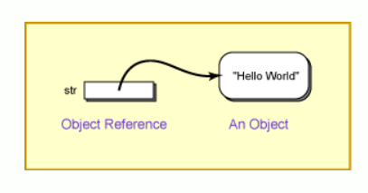
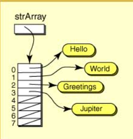

🧩 Array de objetos (Java)
En Java, un array de objetos es un array de referencias.
El array guarda “flechas” (referencias) hacia objetos que viven en el heap, no los objetos dentro del array.
🗺️ Índice
- ✅ Idea clave: el array guarda referencias
- 🧱 Declaración, creación e inicialización
- 🧵 Array de
String - 🧑💻 Array de objetos propios
- 🧪 Recorridos y operaciones típicas
- ⚠️
nully errores frecuentes - 🧠 Memoria: ¿qué ocupa realmente?
- 🧰 Argumentos de línea de comandos (
args) - 🔁 Copias: referencia vs copia real
✅ Idea clave: el array guarda referencias
Cuando haces:
String s; // variable de referencia (aún NO hay objeto)
s = "Hola"; // ahora sí hay un objeto String (literal internado) y s apunta a él
Con arrays ocurre lo mismo, pero con muchas referencias:
String[] a = new String[3]; // array de 3 referencias (todas empiezan en null)
aapunta a un array.a[0],a[1],a[2]son referencias, y al inicio valennull.- El objeto solo existe cuando haces
new(o cuando asignas un literal/resultado que ya es un objeto).

🧱 Declaración, creación e inicialización
🧾 Declarar (tipo + nombre)
Persona[] personas;
🏗️ Crear el array (tamaño fijo)
personas = new Persona[5];
Ojo: esto NO crea 5 personas, crea un array con 5 huecos (
null).
✨ Crear objetos y meterlos dentro
personas[0] = new Persona("Ana", 20);
personas[1] = new Persona("Luis", 21);
⚡ Inicialización directa (literal de array)
String[] palabras = {"Hola", "mundo", "Java"};
Y con objetos:
Persona[] grupo = {
new Persona("Ana", 20),
new Persona("Luis", 21)
};
🧵 Array de String
Declaración y uso:
String[] array = new String[5];
array[0] = "Hello";
array[1] = "World";
Cada String es un objeto normal. El array solo guarda referencias a esos objetos.

🧑💻 Array de objetos propios
🧩 Clase Persona
public class Persona {
private String nombre;
private int edad;
public Persona(String nombre, int edad) {
this.nombre = nombre;
this.edad = edad;
}
public String getNombre() { return nombre; }
public int getEdad() { return edad; }
public void cumplirAnios() { edad++; }
@Override
public String toString() {
return nombre + " (" + edad + ")";
}
}
🏁 Uso en main
public class DemoArrayObjetos {
public static void main(String[] args) {
Persona[] clase = new Persona[3]; // [null, null, null]
// Crear y asignar objetos
clase[0] = new Persona("Marta", 19);
clase[1] = new Persona("Pablo", 20);
// clase[2] sigue siendo null
// Recorrer con for tradicional
for (int i = 0; i < clase.length; i++) {
System.out.println(i + ": " + clase[i]);
}
// Usar un objeto (¡cuidado con null!)
if (clase[1] != null) {
clase[1].cumplirAnios();
}
System.out.println("Después: " + clase[1]);
}
}
🧪 Recorridos y operaciones típicas
🔄 for con índice
Útil si necesitas el índice (i) o modificar posiciones.
for (int i = 0; i < personas.length; i++) {
if (personas[i] != null) {
System.out.println(personas[i].getNombre());
}
}
🚶 for-each
Más simple, pero no tienes índice.
for (Persona p : personas) {
if (p != null) System.out.println(p);
}
🔎 Buscar un elemento (por nombre)
public static Persona buscarPorNombre(Persona[] arr, String nombre) {
for (Persona p : arr) {
if (p != null && p.getNombre().equalsIgnoreCase(nombre)) {
return p;
}
}
return null;
}
🧹 Contar posiciones ocupadas
public static int countNoNull(Persona[] arr) {
int c = 0;
for (Persona p : arr) if (p != null) c++;
return c;
}
⚠️ null y errores frecuentes
Esto peta:
Persona[] a = new Persona[2];
System.out.println(a[0].getNombre()); // a[0] es null
Solución: comprobar antes.
if (a[0] != null) {
System.out.println(a[0].getNombre());
}
🧨 Error típico: “he creado el array, ¿por qué está vacío?”
Porque crear el array no crea los objetos.
✅ Esto crea un array vacío (de referencias):
Persona[] a = new Persona[10];
✅ Esto ya crea objetos:
for (int i = 0; i < a.length; i++) {
a[i] = new Persona("SinNombre", 0);
}
🧠 Memoria: ¿qué ocupa realmente?
- En un array de
int, los valores están dentro del array (contiguos). - En un array de objetos, el array guarda referencias (punteros) a objetos.
📌 Importante: - El tamaño de la referencia depende de la JVM (a menudo 4 u 8 bytes; puede variar según configuración/arquitectura). - Los objetos viven en el heap, cada uno con su propio coste.
👉 Por eso los arrays de objetos suelen ser “ligeros” en el array… pero “pesados” en total si creas muchos objetos grandes.
🧰 Argumentos de línea de comandos (args)
El main recibe:
public static void main(String[] args) {
}
argses unString[].- Cada argumento se separa por espacios.
Ejemplo:
java Demo hola 123 adios
Entonces:
- args[0] = "hola"
- args[1] = "123"
- args[2] = "adios"
🔢 Convertir a número
int n = Integer.parseInt(args[1]);
double x = Double.parseDouble("3.14");
🔁 Copias: referencia vs copia real
❌ Copiar una referencia (NO copia el array)
Persona[] a = new Persona[3];
Persona[] b = a; // b y a apuntan al MISMO array
✅ Copiar el array (shallow copy)
Copia las referencias, no clona los objetos.
Persona[] copia = new Persona[a.length];
for (int i = 0; i < a.length; i++) {
copia[i] = a[i];
}
➡️ Si cambias copia[0].cumplirAnios(), también afecta al objeto que ve a[0] (porque es el mismo objeto).
✅✅ Copia profunda (deep copy)
Necesitas clonar/crear nuevos objetos (si el ejercicio lo pide):
Persona[] copia = new Persona[a.length];
for (int i = 0; i < a.length; i++) {
if (a[i] != null) {
Persona p = a[i];
copia[i] = new Persona(p.getNombre(), p.getEdad());
}
}